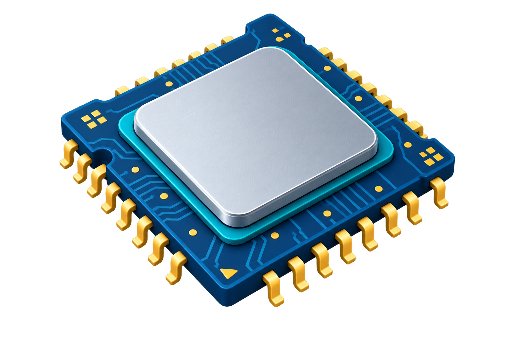
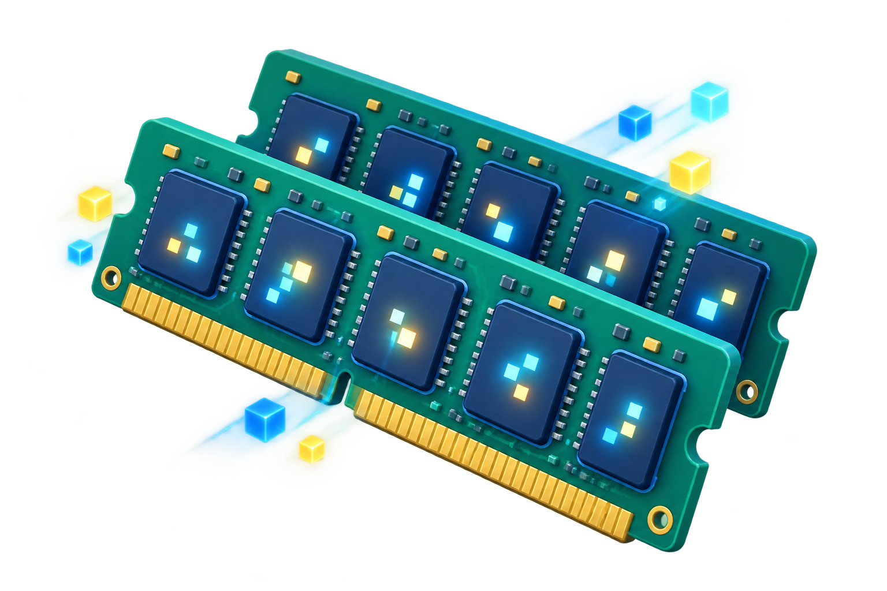
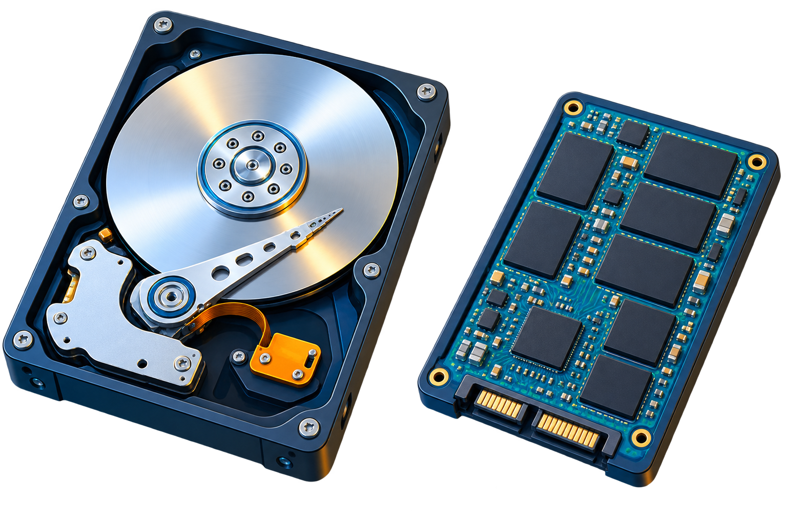
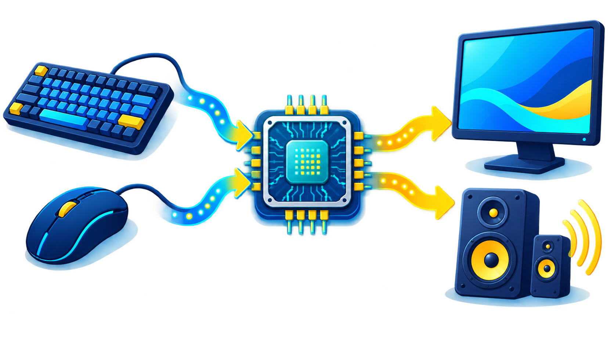
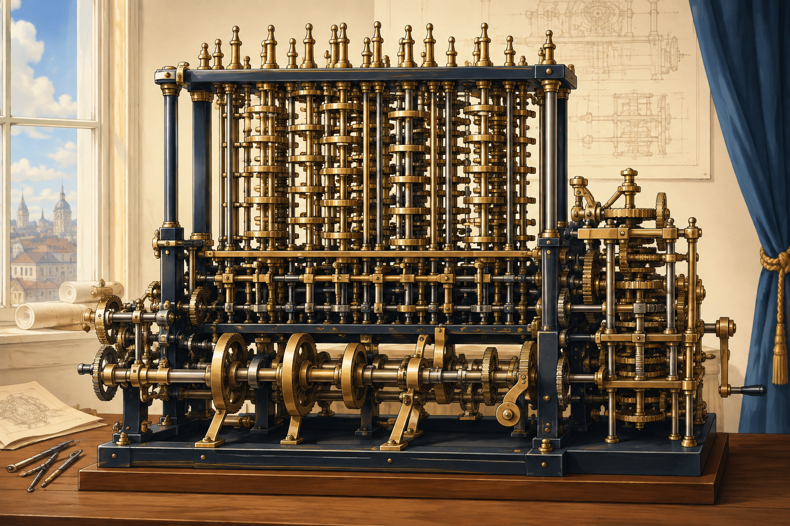
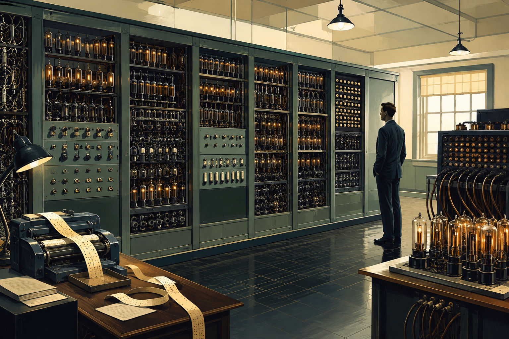
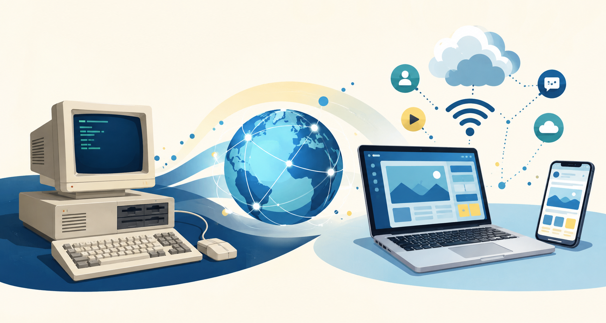

ALGORITHMES → PYTHON
Module 0 · Les fondations
Découvrir
l’informatique
Comprendre la machine avant de lui donner des instructions.
Formateur : Oussama Elhousni
Module 0 · Les fondations
Comprendre la machine avant de lui donner des instructions.
Formateur : Oussama Elhousni
Avant le code
Comprendre les bases avant de programmer.
01 · La grande idée
Un ordinateur est une machine qui reçoit des informations, les traite grâce à des instructions, puis produit un résultat.
Tu tapes une opération sur la calculatrice : le clavier donne l’entrée, le processeur calcule, l’écran affiche le résultat.
Le rôle principal d’un ordinateur est de…
02 · Deux familles
Un ordinateur ne fonctionne jamais avec une seule famille : il faut une machine physique et des instructions pour lui dire quoi faire.
Tout ce que tu peux toucher. Le matériel reçoit l’énergie et réalise les opérations.
Les programmes et instructions qui utilisent le matériel pour accomplir une tâche.
Un clavier sans logiciel ne sait pas quoi faire ; un logiciel sans processeur ne peut pas s’exécuter.
02 · Vérification
Prends le temps de répondre sans revenir à la définition précédente.
Quelle phrase décrit correctement la relation entre hardware et software ?
03 · La machine en équipe
Quel composant conserve un fichier même après l’arrêt du PC ?
04 · Le moteur
Le CPU lit les instructions, effectue les calculs et coordonne les opérations. Il travaille très vite, instruction après instruction.

Que fait principalement le CPU ?
05 · Le bureau de travail
La RAM garde temporairement les programmes et les données utilisés maintenant. Elle aide l’ordinateur à travailler sur plusieurs choses à la fois.

Les données de la RAM disparaissent généralement quand on éteint l’ordinateur.
06 · La mémoire longue durée
Le stockage conserve les fichiers, les programmes et le système d’exploitation, même quand l’ordinateur est éteint.

Où reste un fichier enregistré après l’arrêt du PC ?
07 · Le réseau de la machine
La carte mère est le grand circuit qui relie les composants. Elle leur permet de communiquer et de partager l’énergie.
Les composants sont les quartiers et les pistes de la carte mère sont les routes qui les connectent.
Quel est le rôle principal de la carte mère ?
08 · Communiquer avec la machine
Un périphérique permet à l’utilisateur et à l’ordinateur d’échanger des informations.

Un microphone est principalement un périphérique de…
09 · Le chef d’orchestre
Le système d’exploitation gère le matériel et permet aux applications de fonctionner.
Lequel est un système d’exploitation ?
10 · Les outils
Quelle application utiliser pour écrire un programme Python ?
11 · D’où venons-nous ?
Avant les écrans et les claviers, les humains cherchaient déjà à compter plus vite et à éviter les erreurs.
11 · Étape 1
Le boulier est un outil ancien qui aide à représenter les nombres avec des billes. Il ne “pense” pas : il permet à une personne de déplacer les quantités et de calculer plus facilement.
Cette logique — représenter une information avec des positions — prépare déjà le terrain pour les machines à calculer.
11 · Étape 2
Au XVIIe et au XIXe siècle, des inventeurs créent des machines mécaniques capables d’additionner, soustraire et parfois multiplier.

11 · Étape 3
Au XXe siècle, l’électricité remplace peu à peu les mécanismes. Les premiers ordinateurs électroniques occupent des pièces entières et consomment beaucoup d’énergie.
C’est le début de l’idée moderne : une machine générale, programmable, capable de résoudre différents problèmes.

11 · Étape 4
Les composants deviennent plus petits et moins chers. Les ordinateurs personnels apparaissent, puis les réseaux relient les machines et font naître le Web.

11 · Vérification
Réponds d’abord, puis utilise les étapes précédentes pour vérifier ton raisonnement.
Quelle suite est la plus logique ?
12 · Le voyage d’une instruction
Quand tu utilises une application, plusieurs étapes se passent très vite : le logiciel reçoit une donnée, demande un traitement, puis prépare un résultat.
12 · Vérification
Imagine que tu utilises une calculatrice en ligne.
Tu saisis « 8 + 4 ». Que se passe-t-il juste après la saisie ?
13 · Tu as les bases
14 · À toi de jouer
Ces exercices sont à réaliser sans regarder de solution. Explique tes réponses avec tes propres mots.
Classe ces éléments : clavier, Linux, RAM, navigateur, écran, SSD.
FacileExplique la différence entre la RAM et le stockage avec une comparaison de la vie quotidienne.
FacileDécris le trajet d’une demande : « afficher la météo de Casablanca ».
IntermédiaireImagine une application de calcul. Identifie son entrée, son traitement et sa sortie.
IntermédiaireExplique comment le CPU, la RAM et le stockage travaillent ensemble quand tu ouvres un jeu.
Challenge